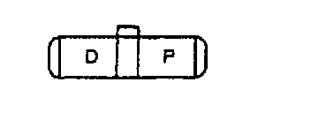
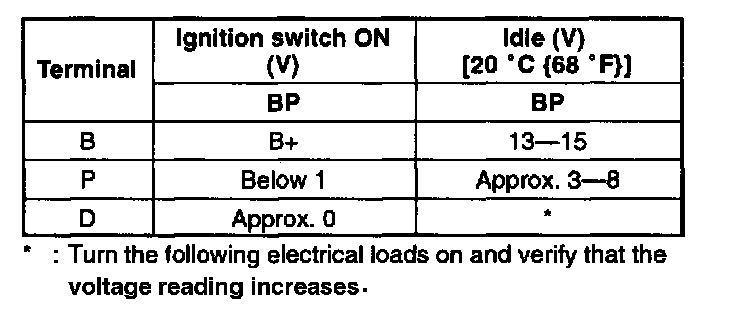
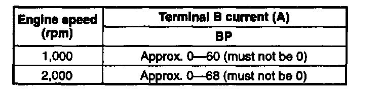

Alternator: Testing and Inspection
GENERATOR INSPECTIONGenerator Warning Light
1. Verify that the battery is fully charged.
2. Verify that the drive belt deflection/tension is correct.
3. Turn the ignition switch to ON and verify that the generator warning light comes on.
4. If not, inspect the generator warning light, wiring harnesses between the battery, generator warning light, and PCM terminal 1 ohm. When the generator warning light and the wiring harnesses are okay, replace the PCM.
5. Verify that the generator warning light goes out after the engine is started.
6. If not, verify the diagnostic trouble code No.8 displayed.
Generator Voltage
1. Verify that the battery is fully charged.
2. Verify that the drive belt deflection/tension is within the specification.
3. Turn off all electrical loads.
4. Turn the ignition switch to START and verify that the generator turns smoothly without any noise while the engine is running.

5. Measure the voltage at the terminals shown in the table.

Standard voltage
- Headlights
- Blower motor
- Rear window defroster
6. If not as specified, disassemble and inspect the generator.
Current
1. Verify that the battery is fully charged.
2. Verify that the drive belt deflection/tension is correct.
3. Disconnect the negative battery cable.
4. Connect a circuit tester capable of reading 120 A or over, between generator terminal B and the wiring harness.
5. Connect the negative battery cable.
6. Turn all electrical loads off.
7. Start the engine and increase the engine speed to 2,000 - 2,500 rpm.
8. Turn the following electrical loads on and verify that the current reading increases.
- Headlights
- Blower motor
- Rear window defroster
NOTE: Current required for generating power varies with electrical loads applied.

Standard current (Reference)
Measuring conditions
Room temperature: 20 °C (68 °F)
Voltage: 13.5 V
Engine hot
9. If generator terminal B current will not increase, disassemble and inspect the generator.